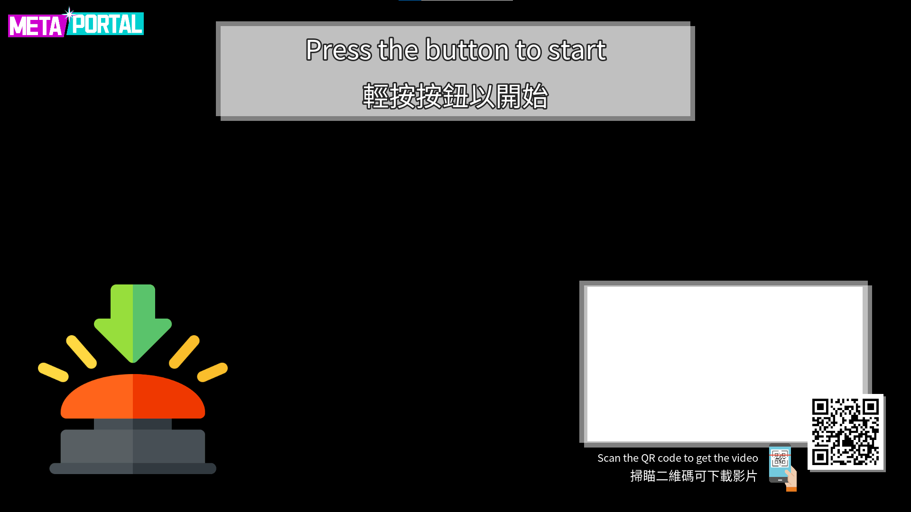

<head>
  <script type="module" src="https://cdn.jsdelivr.net/gh/zerodevx/zero-md@2/dist/zero-md.min.js"></script>

</head>
<video hidden style="width:100%" src="ReadmeResources/vid.mp4" controls></video>


<zero-md>
<script type="text/markdown">

# Ultimate MetaPortal Guide

Usage
---------------
1. Launch `OBS`
2. Double click `Launch` shortcut

---
Troubleshoot
---------------

#1 Camera black screen in `OBS`
---------------
1. Close `OBS`
2. Launch `Insta360 Link Controller`
3. Confim camera feed working
4. Close `Insta360 Link Controller`
5. Open `OBS`

If still not working, delete and recreate video capture device in OBS

#2 Rocket project start with only UI
---------------
</img>

Make sure `OBS` camera is working

#3 Unreal not receiveing feed from `OBS`
---------------
1. Make sure `Spout Output Settings` is started in `OBS`.
2. Make sure `Spout Filter` is set in `Video Capture Device`.

<video width="700" src="ReadmeResources/spout1.mp4" controls></video>

2. Make sure unreal is set to use the correct spout output.
>OWLSpoutReceiverManager=>Spout Receiver is set to `Spout_OBS_Filter`

<video width="700" src="ReadmeResources/spout2.mp4" controls></video>

#4 (re)upload specific file
---------------
1. Make sure `VideoUploader` is started
2. Open `VideoFolder`
3. Drag the file out of `VideoFolder`
4. Drag the file back to `VideoFolder`

<video width="700" src="ReadmeResources/reupload.mp4" controls></video>

#5 Check uploaded file
---------------
Go to [booth.micology.ai](https://booth.micology.ai).

#6 Sign in to Offworld live
---------------
1. Log in with account
2. Restart unreal if watermark still show

>enyvpmwjvvxkslhxzy@tpwlb.com

>enyvpmwjvvxkslhxzy

<video width="700" src="ReadmeResources/offworld.mp4" controls></video>

</script>
</zero-md>